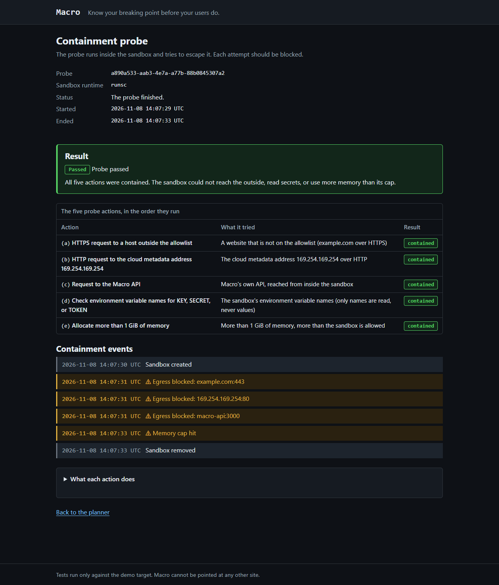
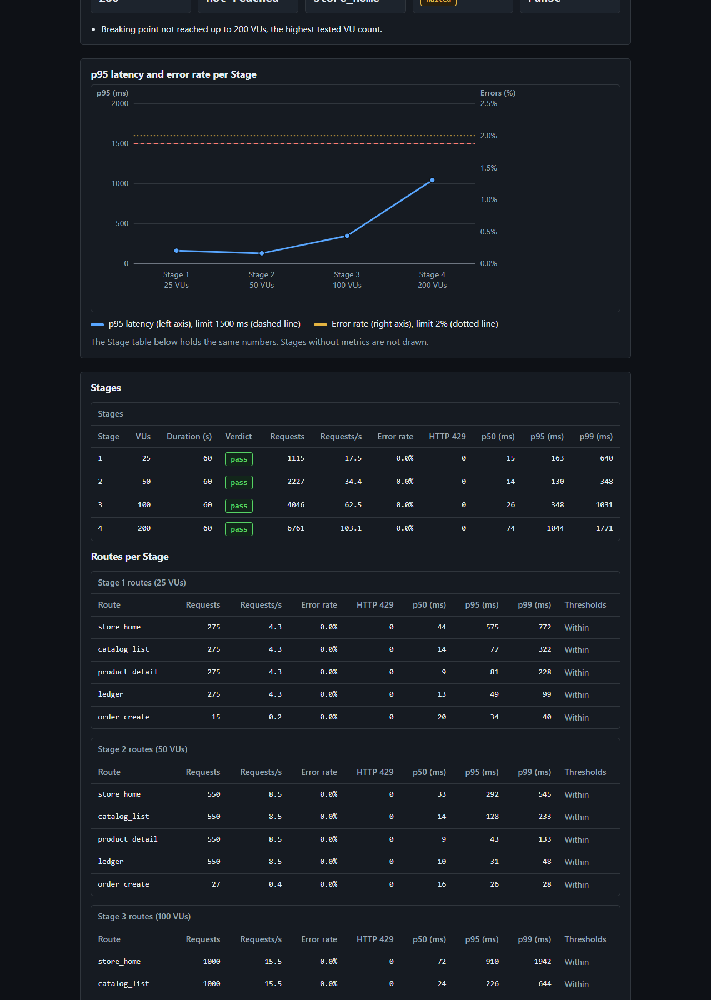

How many users can your site take?
Ask an agent that cannot hurt anyone.
macro.my.id · github.com/mbayue/macro
The model proposes. Code decides. The sandbox enforces. The agent never holds a permission it could misuse.
Three agents on Vultr Serverless Inference. Four stages at 25, 50, 100 and 200 virtual users. Each stage is its own sandbox.


| Vultr product | What it does in Macro |
|---|---|
| Cloud Compute: macro | Macro API, web UI, Caddy, egress proxy, gVisor sandboxes. Singapore, Ubuntu 24.04. |
| Cloud Compute: yue-demo | The only allowed target: a full demo shop (web, API, Postgres, Redis). |
| Serverless Inference | Planner, Supervisor and Reporter. minimax-m3.1-flash, fallback mimo-v2.6-flash. |
| Firewall | Inbound 80 and 443 on the Macro VM limited to Cloudflare ranges. |
TypeScript on Bun, k6 pinned by digest, Docker Compose. 422 automated tests, including property tests.
Prove you own a domain with a DNS TXT record, then test it. Same gate, same sandbox.
Start throwaway Vultr VMs in other regions, run a stage, destroy them.
Compare two runs of the same plan after a fix, and show what moved.
macro.my.id
github.com/mbayue/macro